dem_waves_ctrs <- read_csv("https://raw.githubusercontent.com/eteitelbaum/dataviz-fall-2023/main/slides/data/dem_waves_ctrs.csv")
dem_waves_chart <- ggplot(dem_waves_ctrs, aes(x = year, y = polyarchy, color = country)) +
geom_line(linewidth = 1) + # our geom is a line with a width of 1
labs(
x = "Year",
y = "Polyarchy Score",
title = 'Democracy in countries representing three different "waves"',
caption = "Source: V-Dem Institute",
color = "Country" # make title of legend to upper case
)Accessibility and Color Schemes
August 24, 2026
Color Blindness
- Color Vision Deficiency (CVD) or color blindness affects 8 percent of men and 1 in 200 women
- There are different types of CVD but most common is red-green color blindness
- Therefore, don’t include red and green in the same chart!
- Look for color blind safe palettes
Last Week’s Line Chart
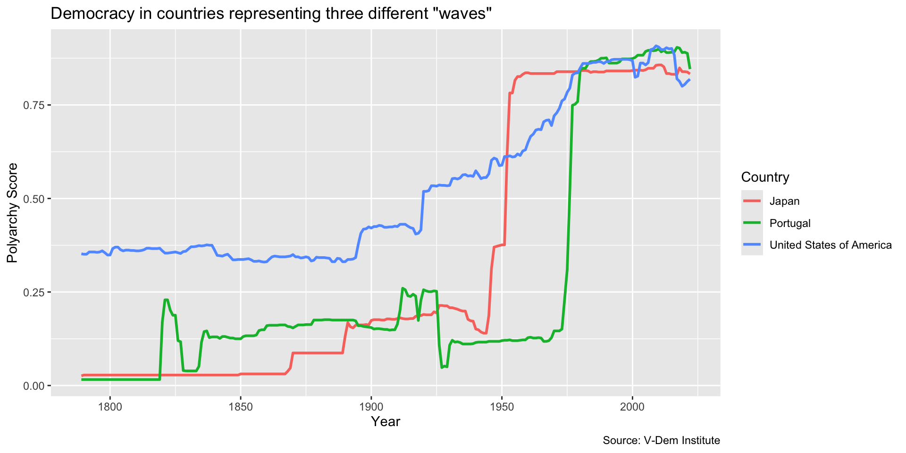
Last Week’s Line Chart
Create last week’s line chart and save as an object…
CVD Plot
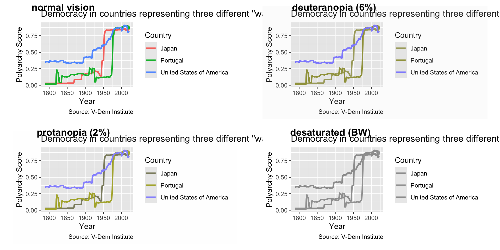
CVD Plot
Call CVD plot from the colorBlindness package. CVD stands for “color vision deficiency.”
CVD Plot
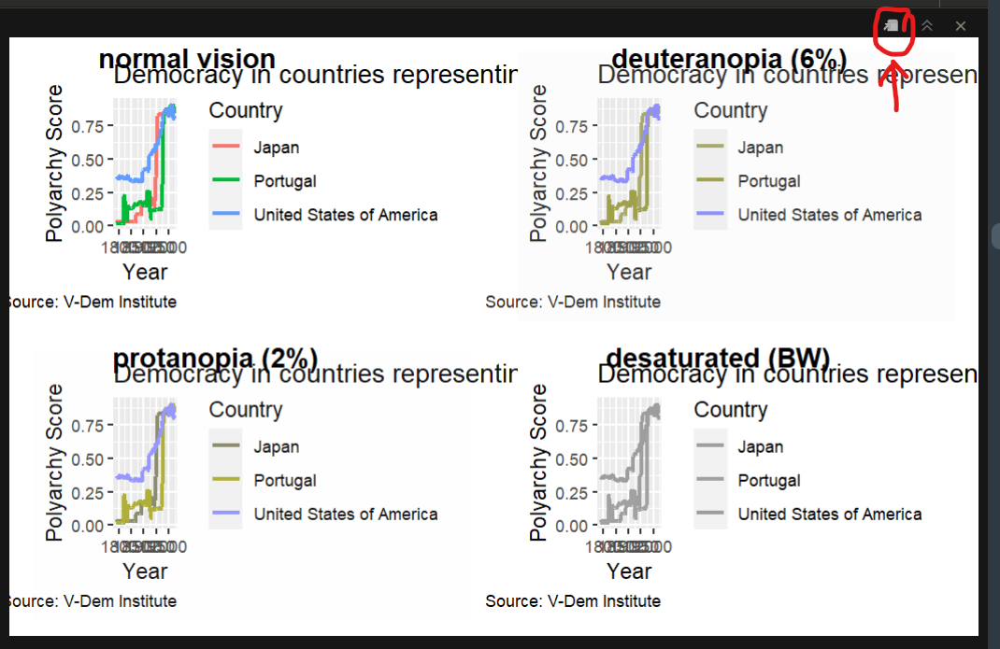
Click on little image to expand view…
Your Turn!
- Take your
dem_waves_chartobject and runcvdPlot()on it - Expand the window and have a good look
- Which group would have the toughest time reading this graph?
05:00
Create Your Own Color Scheme
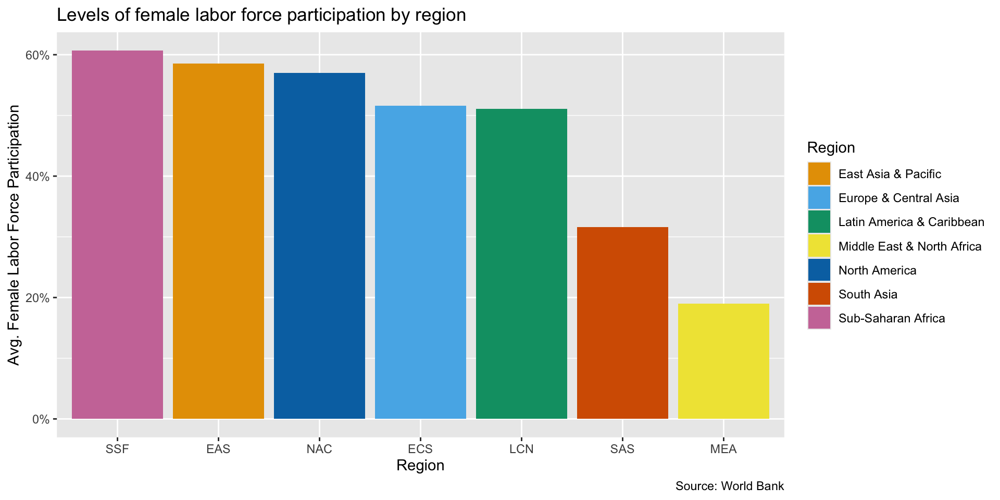
Create Your Own Color Scheme
cb_palette <- c("#E69F00", "#56B4E9", "#009E73", "#F0E442", "#0072B2", "#D55E00", "#CC79A7")
flfp_region <- ggplot(flfp_gdp_regions, aes(x = reorder(iso3c, -flfp), y = flfp, fill = region)) +
geom_col() +
scale_y_continuous(labels = scales::label_percent(scale = 1)) +
labs(
x = "Region",
y = "Avg. Female Labor Force Participation",
title = "Levels of female labor force participation by region",
fill = "Region",
caption = "Source: World Bank"
)
flfp_region + scale_fill_manual(values = cb_palette)Create Your Own Color Scheme
cb_palette <- c("#E69F00", "#56B4E9", "#009E73", "#F0E442", "#0072B2", "#D55E00", "#CC79A7")
flfp_region <- ggplot(flfp_gdp_regions, aes(x = reorder(iso3c, -flfp), y = flfp, fill = region)) +
geom_col() +
scale_y_continuous(labels = scales::label_percent(scale = 1)) +
labs(
x = "Region",
y = "Avg. Female Labor Force Participation",
title = "Levels of female labor force participation by region",
fill = "Region",
caption = "Source: World Bank"
)
flfp_region + scale_fill_manual(values = cb_palette)Your Turn!
- Go to Module 2.2 on the course website
- Do the setup steps
- Reproduce the column chart of FLFP with the custom color scheme
- Try changing one of the hex codes
- Now run
cvdPlot()on the plot object to make sure it is color-blind friendly - Now try a coolors palette or GW colors
10:00
Using a Color Palette
- There are many color palettes
- Viridis scales look cool and are accessible
- ColorBrewer has many scales some of which are color-blind safe
- The paletteer package aims to be a comprehensive collection of color palettes
Viridis
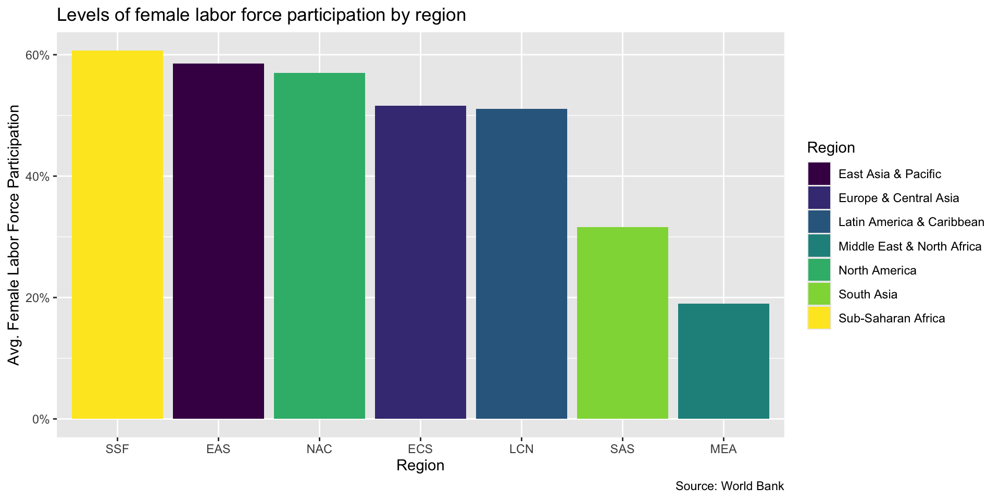
Viridis
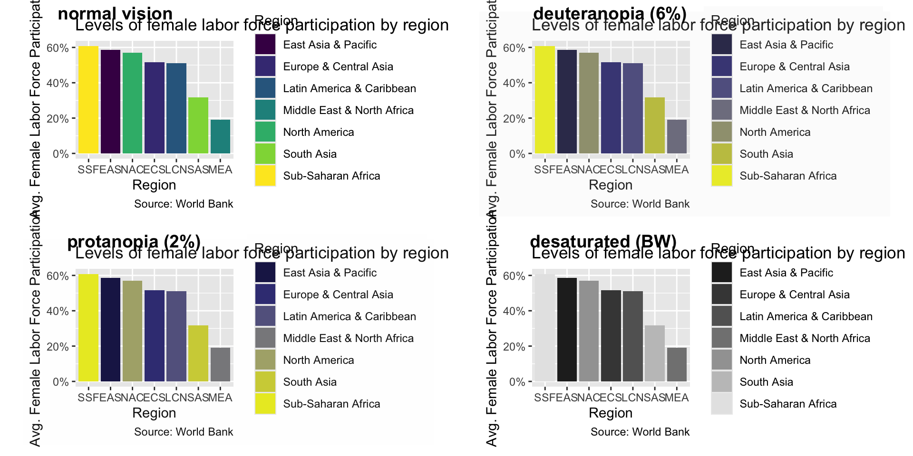
ColorBrewer
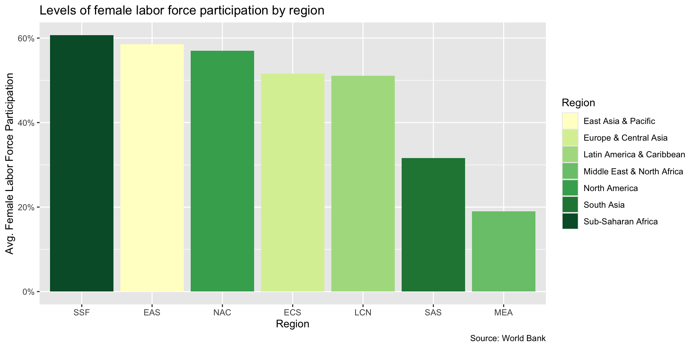
ColorBrewer
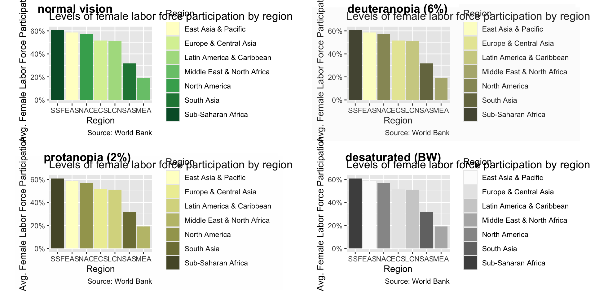
Paletteer
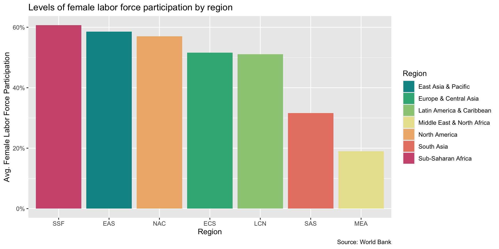
Paletteer
Not all palettes are color-blind safe…
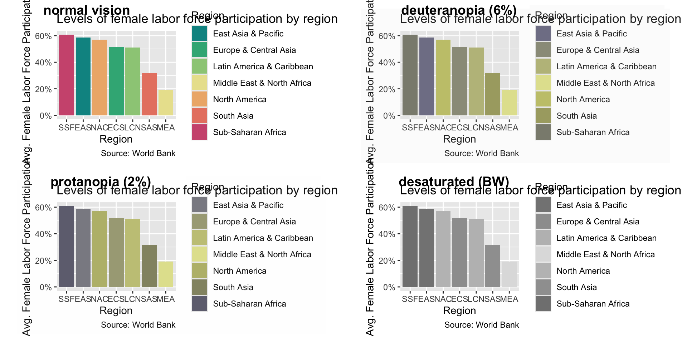
Paletteer

And some many not have enough colors for your chart…
Your Turn
- Try one of the color palettes packages we just discussed
- A full list of viridis schemes is here
- For ColorBrewer, check out this selector tool
- For paletteer, check out this paletteer gallery
10:00
Scaling for Scatter Plots
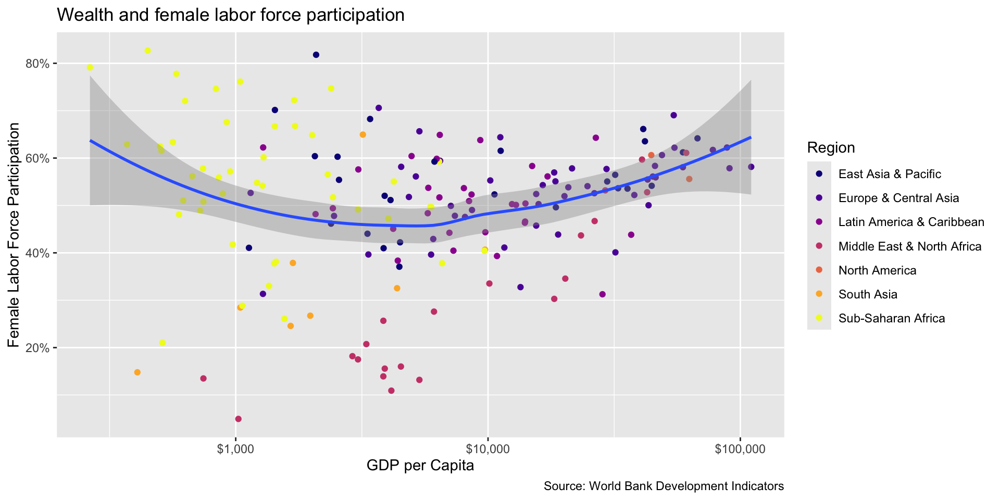
Fill vs. Color
- Use fill (e.g.
fill =orscale_fill_*) to modify the fill color of shapes like bars, boxes, or polygons. - Commonly applied to:
- Bar charts
- Box plots
- Histograms
Fill vs. Color
- Use color (e.g.
color =orscale_color_*) to modify the color of points, lines, or text. - Commonly applied to:
- Scatter plots
- Line charts
- Text elements
Scaling for Scatter Plots
wealth_flfp <- ggplot(flfp_gdp, aes(x = gdp_pc, y = flfp)) +
geom_point(aes(color = region)) + # color points by region
geom_smooth(method = "loess", linewidth = 1) + # make the line a loess curve
scale_x_log10(labels = scales::label_dollar()) + # stretch axis, add '$' format
scale_y_continuous(labels = scales::label_percent(scale = 1)) + # add % label
labs(
x= "GDP per Capita", # x-axis title
y = "Female Labor Force Participation", # y-axis title
title = "Wealth and female labor force participation", # plot title
caption = "Source: World Bank Development Indicators", # caption
color = "Region" # legend title
)
wealth_flfp + scale_color_viridis_d(option = "plasma")Scaling for Scatter Plots
Use the end argument to darken the colors
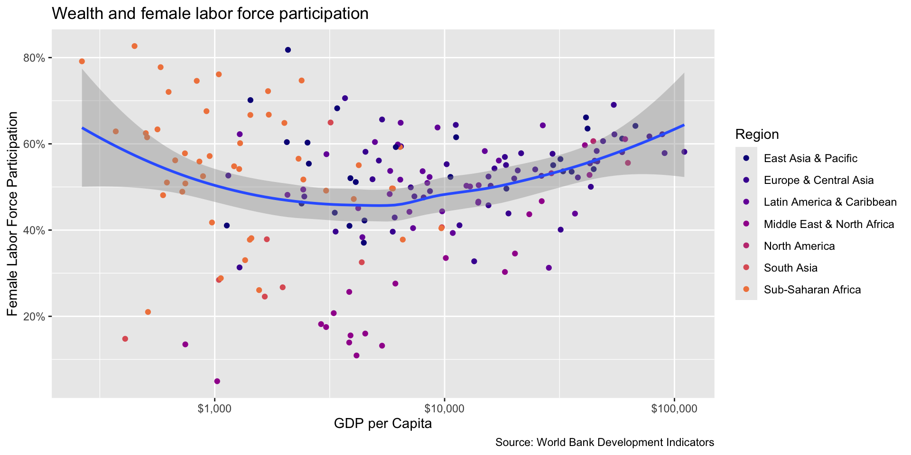
Scaling for Scatter Plots
Use the direction argument to flip the color scale…
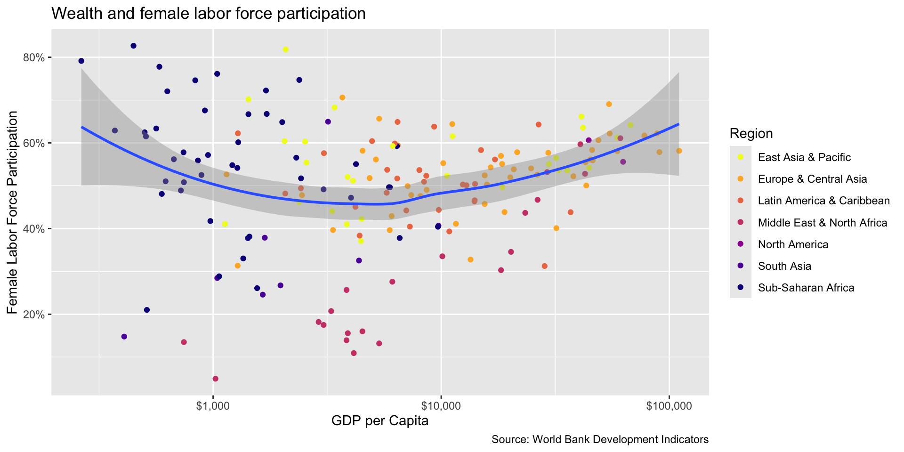
Your Turn!
- Try using one of the color schemes on a scatter plot
- Use
scale_color_instead ofscale_fill_ - Play around with
endanddirectionarguments inviridis
10:00